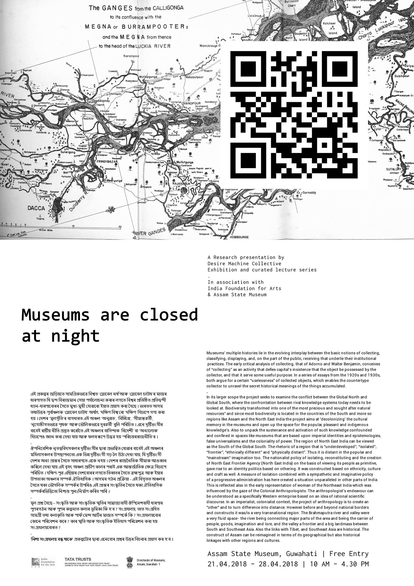
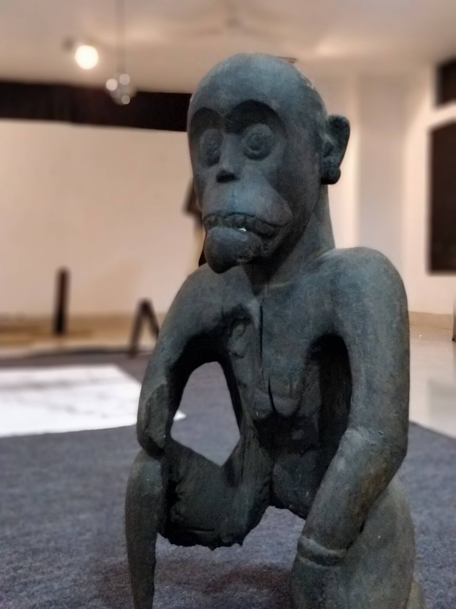

As a part of the IITG Medialab, I created a QR based intervention for the curatorial exhibition Museums are closed at night in Assam State Museum. This involved creating a series of posters, a website as pedagogical archive to get the common public of the city engage in the history and culture of the place and a proposal for a book.

